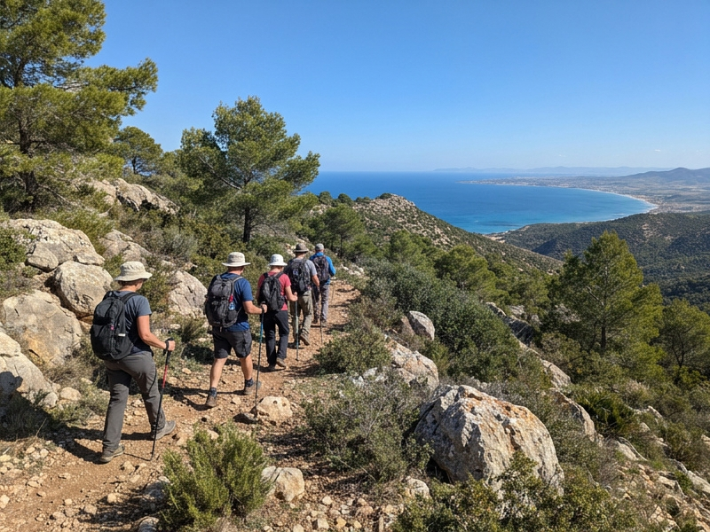

Qui sommes-nous ?
Cap Bon Explorer est une entreprise spécialisée dans la promotion du tourisme et des activités de loisirs dans la région du Cap Bon. Nous proposons une variété d'expériences pour tous les goûts, allant des visites culturelles aux activités de plein air.
Notre mission est de faire vivre le Cap Bon autrement : en compagnie d'artisans, de guides passionnés et d'habitants qui partagent leurs savoir-faire. Chaque expérience est pensée pour être simple, accessible et respectueuse de la région. Sur ce portail, vous pouvez comparer les activités, consulter l'agenda et simuler votre réservation en toute transparence.
Nos expériences à la une


Pourquoi découvrir le Cap Bon ?
- Un patrimoine millénaire : des ruines puniques de Kerkouane aux ruelles de la médina de Nabeul.
- Un artisanat vivant : poterie et céramique se pratiquent encore dans les ateliers de la région.
- Des paysages variés : montagnes, forêts et plages de sable fin se trouvent à quelques kilomètres.
- Des expériences authentiques : marchés locaux, cuisine du terroir et rencontres avec les habitants.
Prêt à vivre l'expérience ?
Choisissez votre activité et simulez votre réservation en quelques clics.
Simuler une réservation